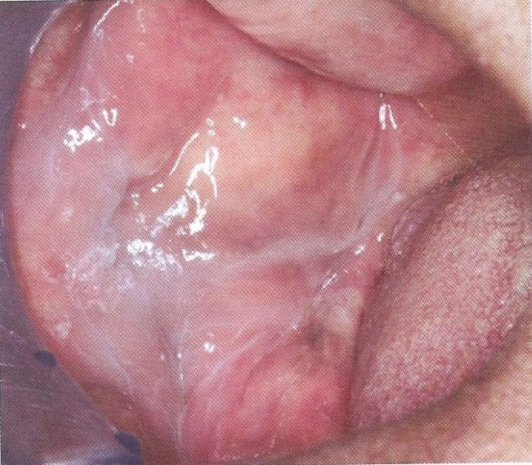

Leukoedema
ลิวโคอีดีมา
การเปลี่ยนแปลงของเยื่อเมือกช่องปากเป็นสีขาวน้ำนมหรือเทาจาง
ลักษณะเป็นเส้นขาวละเอียด และรอยย่นสีขาวตื้น ๆ
ขอบเขตไม่ชัดเจน กลืนกับเยื่อเมือกข้างเคียง
เช็ดไม่ออก ไม่มีอาการ
ไม่ทราบสาเหตุ แต่มีความสัมพันธ์กับการสูบบุหรี่ และผู้ที่มีสีผิวเข้ม
พบบริเวณเยื่อเมือกกระพุ้งแก้มทั้ง 2 ข้าง
การวินิจฉัยโดยดึงเยื่อเมือกให้ตึง จะทำให้รอยเส้นขาวและรอยย่นสีขาวลดลงหรือหายไป
การรักษา ไม่ต้องรับการรักษาใด ๆ